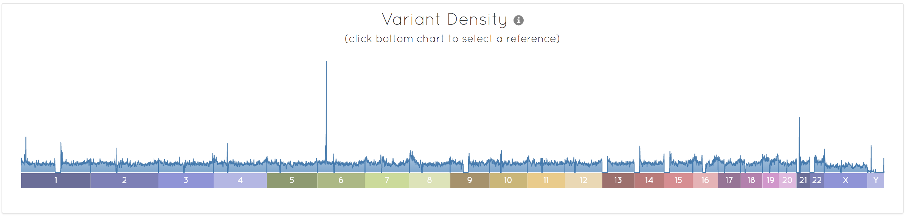
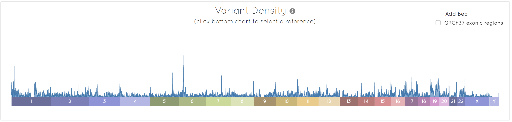

The variant density chart shows the distribution of variants across the genome. To zoom in on a specific reference sequence (chromosome), you can select the coloured sequence boxes under the distribution. The appearance of this chart is dependent on a number of different factors, but specifically, the type of sequencing undertaken, e.g. whole genome (WGS) or whole exome (WES).
Whole genome sequencing
For a WGS VCF file, the variant distribution should be evenly distributed across the whole genome, as shown for a human sample below.

You will notice that there are some areas of zero variant density in the above chart. Chromosomes 1, 3, 16, 19, and 20 are metacentric chromosomes, and have a centromeric region where no variants will be present, close to the centre of the chromosome. This gap is particularly large in chromosomes 1 and 16. Chromosome 9 is submetacentric and has a large centromere, but the centromere is offset leading to p and q arms of different lengths. Finally, chromosomes 13, 14, 15, 21, and 22 are acrocentric. Here the p arm is so short, it is difficult to observe, leading to the centromere appearing at the beginning of the chromosomes.
Observing gaps in coverage for these chromosomes is expected, but any other gaps could be indicative of problems with the variant calls. Male samples in the VCF file have reduced coverage on the X chromosome (since they only have one copy), so it is also expected that the average variant density is lower on this chromosome. Often variant calls are not generated for the Y chromosome, or pseudoautosomal and heterochromatic regions are removed, leading to few calls.
Whole exome sequencing
For a WES VCF file containing many samples, the variant distribution will appear much more uneven, since the VCF file will only contain variants in exonic regions. Some of the gaps described for the WGS can still be observed, but there is still generally coverage across the whole chart. Any large gaps would be suggestive of data problems.
